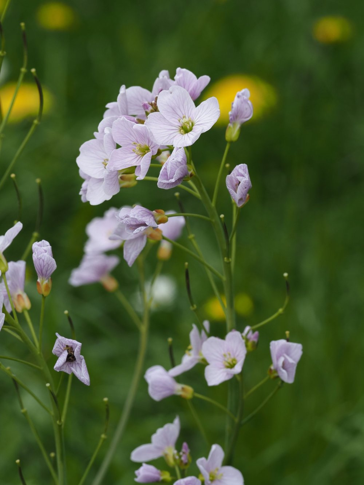
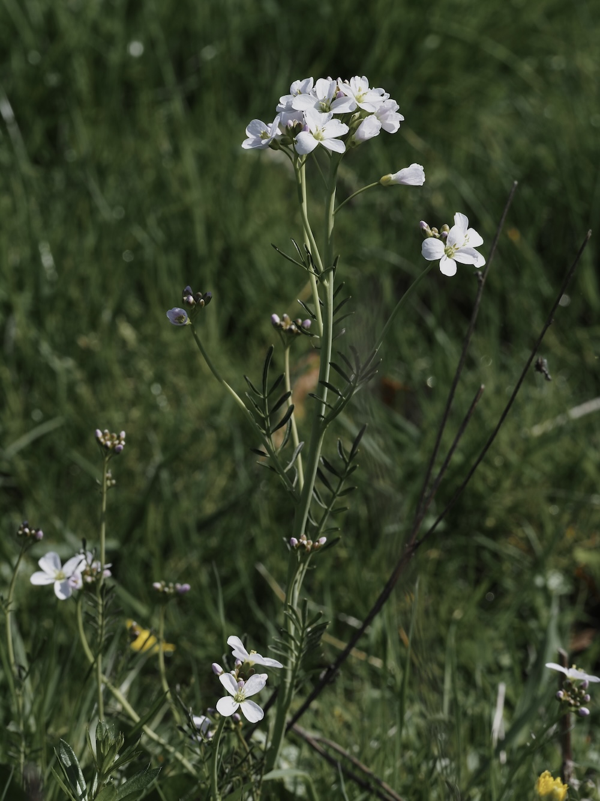
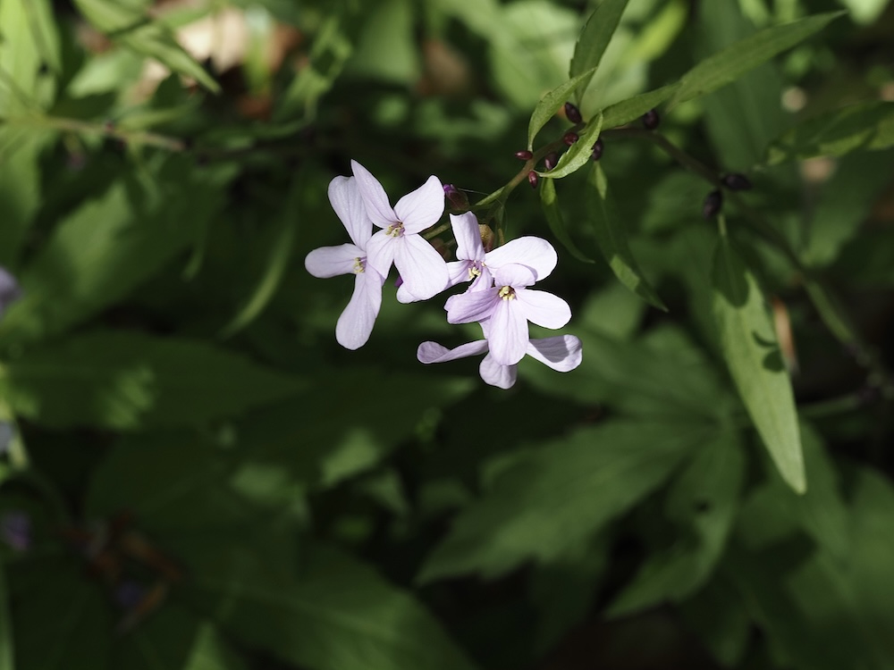

Kuckucksblume, Wildgemüse und Zeigerin feuchter Wiesen.




Kuckucksspeichel – ein volkstümlicher Irrtum
Die typischen Schaumhäufchen an Wiesenstängeln wurden früher dem Kuckuck zugeschrieben – er soll sie beim Rufen versprühen. Tatsächlich steckt eine Zikaden-Larve (Philaenus spumarius) darin, die Pflanzensaft aufschlägt. Der Schaum schützt die Larve vor Austrocknung und Fressfeinden – ein cleveres Überlebensprinzip mit jahrhundertelanger Fehldeutung.
Zeigerin der Wiesenqualität
Das Wiesen-Schaumkraut zeigt feuchte, artenreiche Wiesen an. In intensiv genutztem Grünland fehlt es – Entwässerung, Düngung und frühe Mahd zerstören seinen Standort. Sein Vorkommen ist ein gutes Indiz für ökologisch wertvolle Feuchtwiesen, die europaweit zu den am stärksten gefährdeten Lebensräumen gehören.
Wissenswertes & Merksätze
Kuckucksspeichel
Jeder kennt die Schaumhäufchen – kaum jemand weiss, dass eine Zikaden-Larve dahintersteckt. Ein gutes ‚Wusstest du'-Thema auf der Exkursion.
Verwandt mit Brunnenkresse
Cardamine und Nasturtium (Brunnenkresse) sind eng verwandt – beide Kreuzblütler mit ähnlichem Geschmack. Wer Brunnenkresse kennt, ahnt den Geschmack.
Blütenfarbe variiert
Von fast weiss bis intensiv rosa – manchmal beide Morphen auf derselben Wiese. Die Variation ist genetisch, nicht standortbedingt.